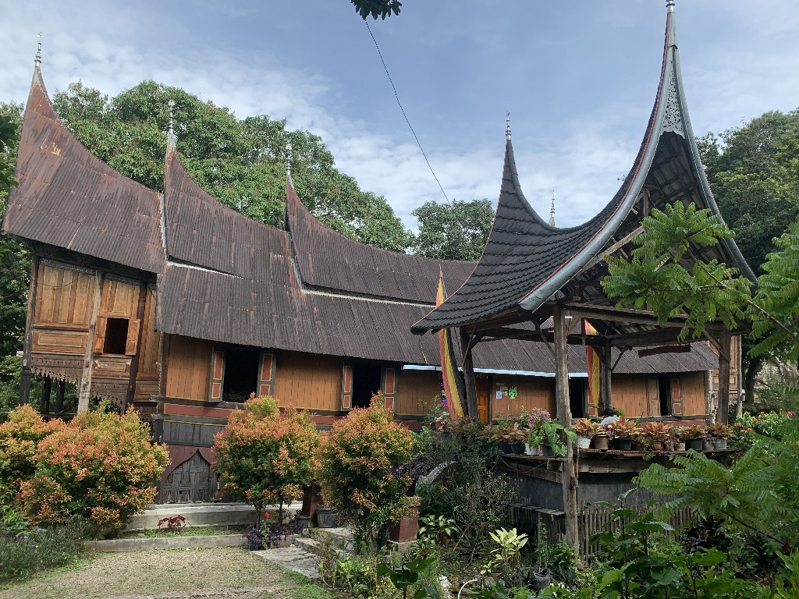
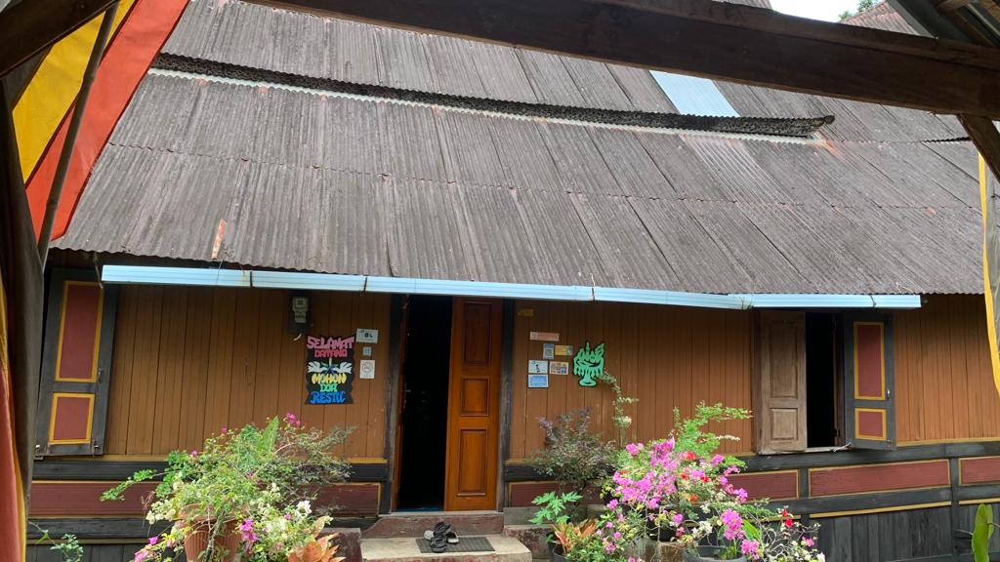
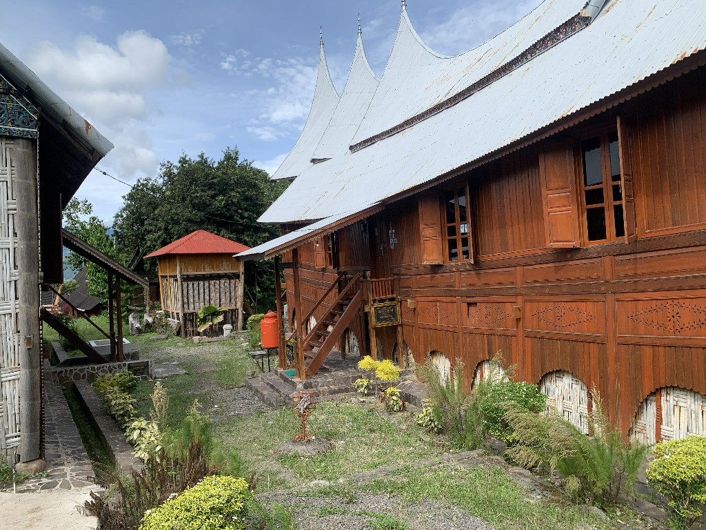
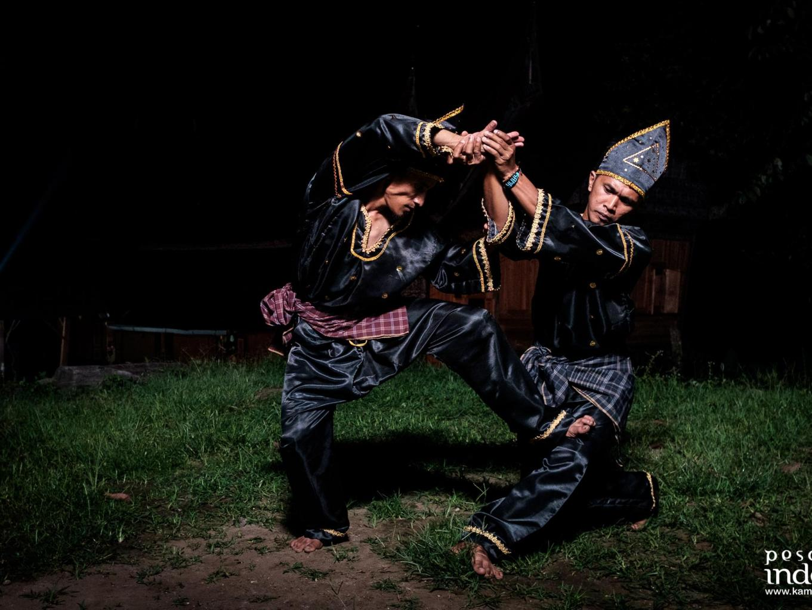
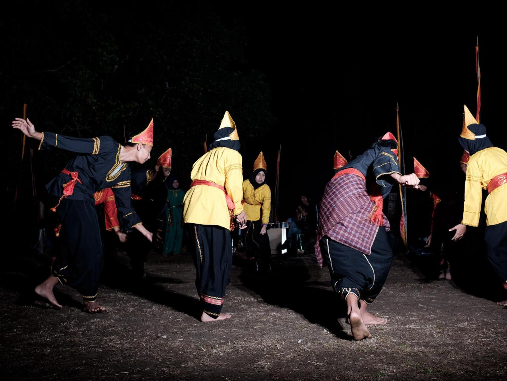

Tentang

Kampuang Minang Nagari Sumpu terletak di Nagari Sumpur, Kecamatan Batipuh Selatan Kabupaten Tanah Datar Sumatra Barat tepatnya di sebelah utara Danau Singkarak yang di aliri oleh aliran Batang Sumpu. Untuk menuju ke Kampuang Minang Nagari Sumpu diperkirakan menempuh perjalanan dari Bandara Internasional Minangkabau lebih kurang 2 jam perjalanan. Di kampuang Minang Nagari Sumpu terdapat wisata yang berbasis budaya dengan adanya lebih kurang 70 buah rumah gadang dan beberapa situs sejarah. Dari sekian banyaknya rumah gadang, terdapat 3 buah rumah gadang yang sudah dijadikan Homestay bagi wisatawan yang berkunjung ke Kampuang Minang Nagari Sumpu.
Objek Wisata
Rumah Gadang
Event
Rumah Gadang
Rumah Gadang adalah nama untuk rumah adat Minangkabau yang merupakan rumah tradisional dan banyak jumpai di Sumatra Barat, Indonesia. Rumah ini juga disebut dengan nama lain oleh masyarakat setempat dengan nama Rumah Bagonjong atau ada juga yang menyebut dengan nama Rumah Baanjuang. Rumah ini mempunyai ciri-ciri yang sangat khas dan indah, yaitu bentuk atap melengkung seperti tanduk kerbau dan bagian tengah mirip badan kapal.
Rumah Gadang Rosmiati Kamal

| Name |
Rumah Gadang Rosmiati Kamal |
| Address |
Desa Wisata Kampuang Minang Nagari Sumpu |
| Open |
09:00 WIB |
| Close |
19:00 WIB |
| Ticket Price |
Rp 650.000 |
| Contact Person |
081374519594 |
Rumah Gadang Siti Fatimah

| Name |
Rumah Gadang Siti Fatimah |
| Address |
Desa Wisata Kampuang Minang Nagari Sumpu |
| Open |
09:00 WIB |
| Close |
19:00 WIB |
| Ticket Price |
Rp 350.000 |
| Contact Person |
081374519594 |
Event
Pertunjukan Silat Tradisional Sumpu

| Name |
Pertunjukan Silat Tradisional Sumpu |
| Category |
Wisata Budaya |
| Event Date |
11 July 2022 |
| Ticket Price |
Rp 850.000 |
| Contact Person |
081374519594 |
Description
Silat tradisional Minangkabau adalah seni bela diri yang di miliki masyarakat Minangkabau pada umumnya, dikarenakan masyarakat Minang kabau memiliki kebiasaan hidup merantau, sehingga seni bela diri ini diwariskan turun temurun dari generasi ke generasi. Masyarakat Sumpu masih tetap melestarikan seni bela diri ini di kehidupan masyarakatnya, sehingga seni bela diri ini menjadi penampilan yang bisa di nikmati wisatawan kalau berwisata di desa ini.
Rumah Gadang Siti Fatimah

| Name |
Atraksi Kesenian Tradisional |
| Category |
Wisata Budaya |
| Event Date |
10 July 2022 |
| Ticket Price |
Rp 850.000 |
| Contact Person |
081374519594 |
Description
Selain melestarikan nilai budaya berbentuk rumah gadang, masyarakat desa wisata kampung Minang nagari Sumpu juga masih melestarikan kesenian tradisional melalui sanggar Riak Sumpu, untuk itu wisatawan bisa menikmati penampilan kesenian seperti tari piring, tari gelombang ataupun penampilan randai, tentunya dengan memesan paket kesenian di desa wisata kampung Minang nagari Sumpu.